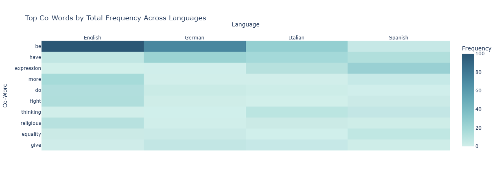
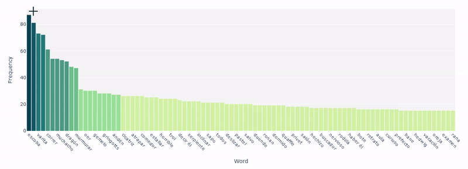

Semantic Moodboard
Personal Project | 2025
An exploration of what languages mean in different cultures, via their languages
Tools used:
Python, Sentence Transformers, Spacy, Selenium, Plotly, Dash

Music Fairy Tales Oy
Employment | Finland
Feel & Play is a musical app for mobile that helps children develop emotional intellgence skills
Roles:
Lead developer, data analyst & user researcher
Tools used:
Unity, C#, SQL, Observation studies, Unity Analytics, Surveys
Foreign Language Text Analyzer script
Personal project
A set of scripts that help streamline the most time consuming part of learning a foreign language: processing new vocabulary.
SpaCy Natural Language Processing models are used to process and lemmitize words, which are then ranked, organized and prepared for flashcards.

Scale or Be Scaled
GMTK 2024 Game Jam | Finland
Scale or Be Scaled is a competitive split screen game, where players race to see who can balance their scale the fastest.
Roles:
Programmer, project management, designer
Tools used:
Unity, C#, Notion, Kanban
Marmortal
Game Design and Production MA | Aalto University, Finland
A FPS with fluid movement, wall-running and frantic race up a tower against the clock
Roles:
UX researcher, Audio programmer, UI programmer
Tools used:
Moderated playtests, Surveys, Usability testing, Unity, C#, Jira
Masters Thesis Project: Automating Games User Research
Game Design and Production MA | Aalto University, Finland
Developed for my masters thesis, this program was designed to improve the user research process at HypeHype. Compared in a study against a manual approach, it was shown to greatly increase the speed of insight-collection, allowing a larger turnover of user tests.
This program uses neural language models to automatically classify, label and highlight areas of interest to the games user researcher.

Developed using Python and Hugging Face language models, while I was working at HypeHype mobile game company as a Player Analyst.
In brief, remote playtesting usually requires the manual review of tens of hours of footage, and we wanted to expedite that process.
Transcripts were generated from playtest videos, which were then analyzed by a sentence classifier trained with manually labelled data and the classified results (in the form of video timestamps) are then passed to the user researcher, sorted by sentiment and intensity.